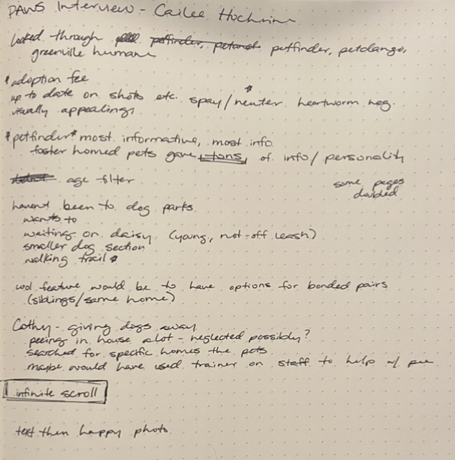

Interviews
These interviews include the director and lead vetrinarian of PAWS and a friend of mine who was recently in the market for a rescue dog. I have another interview hopefully in the works but couldn't fit it into the time frame (will be adding later).
The interview with Dr. Kim Sanders was so informative and helpful to my overall project. I learned about a variety of services that were no where on the website, as well as a deep insight into the different audiences they cater to and the primary goals of PAWS. All of this has been very influncial in my research and my brand redesign.
Cailee was a great example of a customer who is looking for an animal to adopt, which is one of the many audiences that PAWS is attempting to reach. I learned about what she enjoyed from other pet adoption websites, as well as what she was looking for beginning her search.